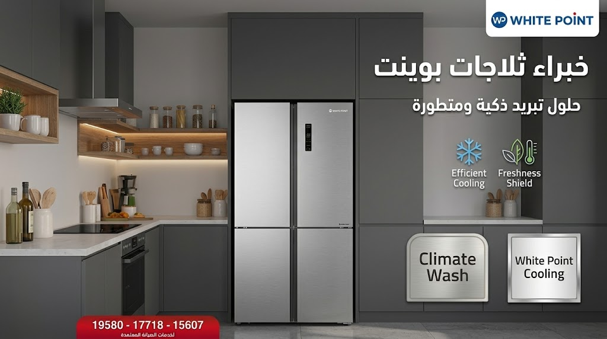
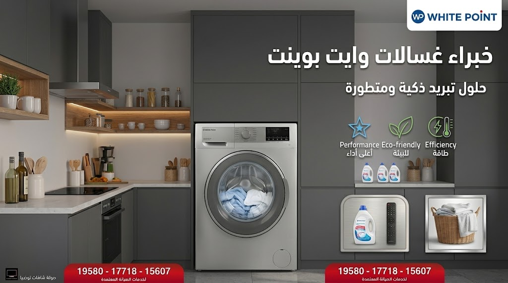
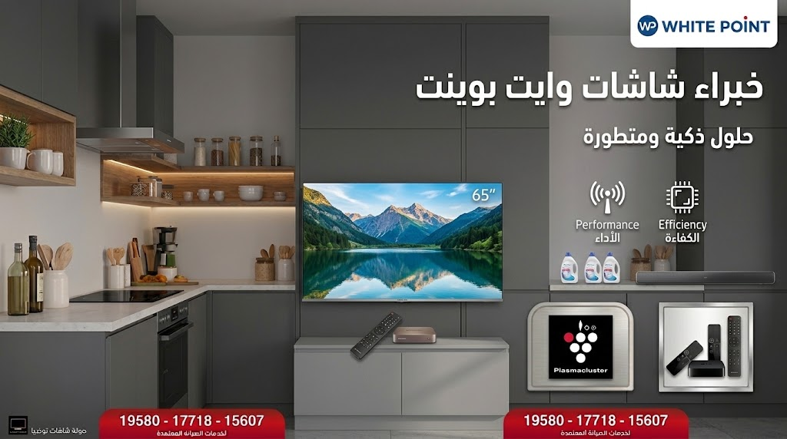
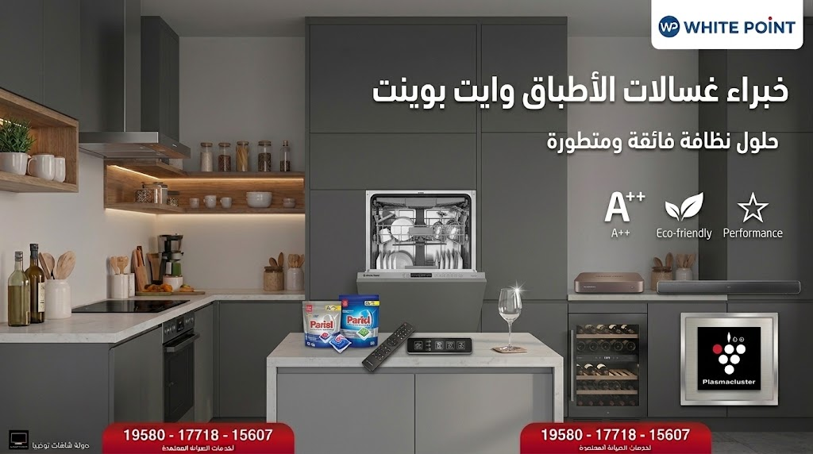

إذا كانت تواجهك مشكلات تتعلق بأجهزة وايت بوينت White Point الخاصة بك، يسعدنا التواصل مع الدعم الفني المتخصص لخدمة منتجات White Point المتوفر على مدار اليوم لخدمتك. نمتلك خبرة فريدة ومثالية لحماية منتجات وايت بوينت للغسالات والثلاجات وغسالات الأطباق ومنع الإصلاحات الخاطئة وتجنب التوقف غير المتوقع لبعض الأجهزة.
نعمل دائماً على تقديم عمليات إصلاح وصيانة وايت بوينت بالطرق الصحيحة والفعالة للوصول إلى الأداء المثالي للثلاجات والغسالات والبوتاجازات. نستخدم أحدث معدات استكشاف الأعطال وتصحيح الأخطاء لضمان إصلاحها بأعلى جودة واحترافية وبقطع الغيار الأصلية.
اطرح الأسئلة لموظفي خدمة العملاء أو اتصل بنا على أرقام صيانة وايت بوينت الموحدة لمعرفة المزايا الإضافية واستمتع بمركز خدمة أفضل في أي وقت.


دعنا نرحب بك في مركزنا المستقل لصيانة وايت بوينت White Point، حيث تجد لدينا عروض صيانة مجانية وكروت الخصومات الحصرية المتاحة لكافة العملاء.
نهدف دائماً لإرضاء العميل، لذا نقدم خدمة صيانة ممتازة لمنتجات White Point تشمل ثلاجات وغسالات وديب فريزر وغسالات أطباق وايت بوينت العبد.
تتميز مراكز الصيانة بتوفير مهندسين وفنيين على أعلى مستوى من الكفاءة والتدريب لحل معقد الأعطال الإلكترونية والميكانيكية.
نضمن لك استخدام قطع غيار وايت بوينت الأصلية المعتمدة بالكامل، مع تقديم ضمان معتمد على عملية الصيانة وقطع الغيار المستبدلة.
تنتشر سيارات الخدمة السريعة في جميع محافظات مصر لتغطي كافة المناطق وتقديم الصيانة المنزلية الفورية دون الحاجة لنقل الجهاز.
تواصل معنا الآن عبر الخطوط الساخنة المعلنة للحصول على معاينة فورية وخصومات تصل إلى 30% على الصيانة.


اعتماداً على الخبرات الممتدة لفريق صيانة وايت بوينت، فإن هدفنا الرئيسي هو تقديم خدمة صيانة سريعة ومضمونة لإعادة تشغيل أجهزتك بكفاءة المصنع.
بمجرد التواصل معنا يتم تحريك أقرب سيارة صيانة مجهزة بالقطع الأصلية ليصلك الفني المختص خلال 24 إلى 48 ساعة فقط.
يسعدنا مساعدتك عبر أرقام الخط الساخن 19580 أو 17718 أو 15607 للتغلب على كافة المشكلات التقنية والأعطال.
نغطي جميع أنحاء جمهورية مصر العربية بتوفير خدمات صيانة منزلية فورية لضمان وصول الخدمة لكل بيت مصري.
كيف يمكنني معرفة تكلفة صيانة جهاز وايت بوينت (White Point)؟
عند التحدث مع أحد ممثلي خدمة العملاء، سيُطلب منك توضيح موديل الجهاز ونوع المشكلة (مثلاً: ثلاجة، غسالة، غسالة أطباق)، وهل الجهاز ما زال داخل الضمان أم خارجه.
سيتم إفادتك بالتكلفة التقريبية للزيارة المنزلية وقطع الغيار المطلوبة قبل البدء في عملية الإصلاح.
تستغرق معظم عمليات الصيانة المنزلية لأجهزة وايت بوينت ما بين 30 إلى 60 دقيقة في حالة الأعطال العادية وتغيير القطع التالفة مباشرة بقطع أصلية.
يمكنك التواصل المباشر معنا من خلال الأرقام الموحدة: 19580 أو 17718 أو 15607 على مدار الأسبوع.
1. تسجيل البلاغ عبر الخط الساخن وتحديد الموعد المناسب.
2. زيارة الفني المختص وفحص الجهاز بأحدث أجهزة كشف الأعطال.
3. تركيب قطع الغيار الأصلية واختبار الجهاز أمام العميل.
4. تسليم شهادة ضمان معتمدة على الصيانة والقطع الجديدة.
فريق خدمة العملاء متواجد لخدمتك وتلقي بلاغات الأعطال والاستفسارات طوال أيام الأسبوع.
ابحث عن رقم الخدمة المباشر حسب نوع الجهاز والماركة لتقديم بلاغات الأعطال فورياً وطلب الصيانة المنزلية بقطع غيار أصلية:
جدول الخدمة المباشرة المتاح على مدار 24 ساعة لجميع المحافظات (القاهرة، الجيزة، الإسكندرية، البحيرة، الغربية، الدقهلية، الشرقية):
| خدمة الماركة والتوكيل | نوع الجهاز المدعوم | رقم اتصل بنا المباشر |
|---|---|---|
| رقم خدمة كريازي / زانوسي / ايديال | أرقام خدمة ثلاجات، غسالات ملابس، ديب فريزر، بوتاجازات | 19580 |
| توكيل غسالات وايت ويل / توشيبا / LG / جاك | غسالات، شاشات، ميكروويف، ثلاجات نوفروست، ديب فريزر | 17718 |
| توكيل شارب / سامسونج / بيكو / كينوود / تورنيدو | تكييفات، غسالات أطباق، شاشات، أجهزة بلت إن، ميكروويف | 15607 |
إذا كنت تبحث عن رقم شركة وايت بوينت أو رقم وايت بوينت، فإننا نوفر لك الرقم الموحد صيانة وايت بوينت (19089) والرقم المختصر وايت بوينت (19089) لضمان سرعة الاستجابة. يمكنك الاتصال الآن على رقم خدمة عملاء وايت بوينت ورقم توكيل وايت بوينت.
نوفر لعملائنا خطوط ساخنه وايت بوينت (19089) وخطوط ساخنة صيانة وايت بوينت تعمل على مدار 24 ساعة. بمجرد اتصالك على الرقم الموحد لشركة وايت بوينت 19089، يتم تحويلك فوراً على رقم مركز صيانة وايت بوينت أو رقم وكيل وايت بوينت المعتمد.
سواء كنت بحاجة إلى رقم خدمة عملاء وايت بوينت 19089، رقم شركة وايت بوينت، أو رقم مركز صيانة وايت بوينت، فإن خدمة صيانة شركة وايت بوينت تضمن لك الوصول إلى رقم مركز وايت بوينت المعتمد 19089 ورقم وكيل وايت بوينت المعتمد. توفر لك خطوط ساخنه لخدمة عملاء وايت بوينت أسرع استجابة لتلقي بلاغات الاعطال.
إذا كنت تواجه عطلاً في غسالة الملابس أو غسالة الأطباق، يمكنك التواصل على رقم صيانة غسالات وايت بوينت (19089) أو طلب خط ساخن صيانة غسالات أطباق وايت بوينت للحصول على صيانة منزلية فورية بقطع غيار أصلية.
نوفر لك رقم خدمة عملاء وايت بوينت 19089 ورقم توكيل غسالات وايت بوينت المتخصص في إصلاح أعطال الطلمبة، طرد المياه، وطلمبة سحب المياه وكروت التشغيل الذكية.
لطلب خدمة الأعطال الخاصة بالثلاجات والديب فريزر، يرجى الاتصال على رقم صيانة ثلاجات وايت بوينت (19089) أو عبر الخط الساخن وايت بوينت المتاح طوال الأسبوع.
يقوم مركز صيانة وايت بوينت بمعالجة مشاكل تسريب الفريون، تراكم الثلج، وأعطال الموتور والنوفرست عبر أفضل مهندسين وفنيين متخصصين.
يعمل لدينا أطقم من فنييون وايت بوينت لتقديم أعلى مستوى من صيانة وايت بوينت المعتمدة تحت مظلة توكيل وايت بوينت للاجهزة الكهربائية (19089).
تغطي مراكز صيانة وايت بوينت كافة المحافظات، وتساعدك في حل اعطال البوتاجازات والأفران وحساسات الأمان والشواية الشعلات فور الاتصال بـ ارقام خطوط ساخنه وايت بوينت 19089.
إرشادات ومعلومات تقنية لمساعدتك في تشخيص وإصلاح الأخطاء التشغيلية البسيطة في أجهزتك قبل التواصل مع الفني المختص عبر الخط الساخن (19089).
السبب المحتمل: انسداد الفلتر السفلي أو طلمبة الطرد بقطع صغيرة من الملابس أو الرواسب.
طريقة الحل: تنظيف فلتر الطرد أسفل الغسالة، وفي حال استمرار المشكلة تواصل مع صيانة وايت بوينت على 19089.
السبب المحتمل: عدم توازن غسيل ملابس ثقيلة في جانب واحد أو تلف سير الموتور.
طريقة الحل: اعادة إعادة توزيع الملابس داخل الحلة بانتظام.
السبب المحتمل: نقص ملح الملمع (Rinse Aid) أو انسداد رشاشات المياه بالمخلفات.
طريقة الحل: إزالة الرشاشات وتنظيف الثقوب بالماء الفاتر وإعادة ملء درج الملح.
السبب المحتمل: عدم إغلاق الجوان أو استخدام مسحوق غير مخصص لغسالات الأطباق.
طريقة الحل: التأكد من نوع المسحوق وفحص إطار الباب المطاطي.
السبب المحتمل: عطل في دائرة السخانات (Defrost) أو تلف الثرموديسك/التايمر.
طريقة الحل: فصل الجهاز 24 ساعة والاتصال بـ صيانة وايت بوينت على 19089 لفحص الدائرة الكهربائية.
السبب المحتمل: تراكم الأتربة على المكثف الخارجي أو انسداد بالدائرة.
طريقة الحل: تنظيف ظهر الثلاجة وترك مسافة 15 سم بينها وبين الحائط.
السبب المحتمل: انسداد أو اتساخ حساس الأمان (Thermocouple) أمام الشعلة.
طريقة الحل: تنظيف رأس الحساس بسلك ناعم لإزالة الدهون المتراكمة.
السبب المحتمل: انسداد فونية الغاز بالدهون أو انسداد الفتحات الهوائية.
طريقة الحل: تسليك فونية الشعلة باستخدام إبرة تسليك مخصصة.
نلتزم في موقعنا بحماية خصوصية زوارنا الكرام. نوضح فيما يلي كيفية التعامل مع البيانات عند استخدامك لخدمات الصيانة المتاحة عبر المنصة:
لا نقوم بجمع أي بيانات شخصية أو تخزينها تلقائياً عند تصفحك للموقع، باستثناء ما تقوم بتقديمه طواعية عند التواصل الهاتفي معنا.
تُستخدم أرقام الهواتف المعروضة (مثل خدمة صيانة ثلاجات كريازي 19580 أو غسالات زانوسي 19580) لتوجيهك مباشرة لخدمة الدعم الفني المطلوبة.
قد يستخدم الموقع ملفات تعريف الارتباط لتحسين تجربة المستخدم وتحليل حركة المرور بهدف تحسين أداء صفحات الخدمة.
تنبيه هام للزوار: هذا الموقع عبارة عن دليل خدمي وتسويقي مستقل يقدم معلومات عن أعطال الأجهزة المنزلية وأرقام مراكز الصيانة المباشرة (مثل خدمات صيانة توشيبا 17718، شارب 15607، وال جي 17718).